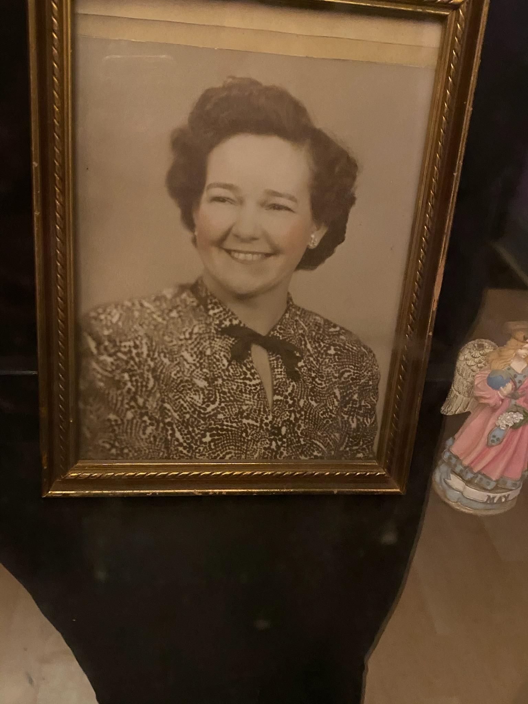
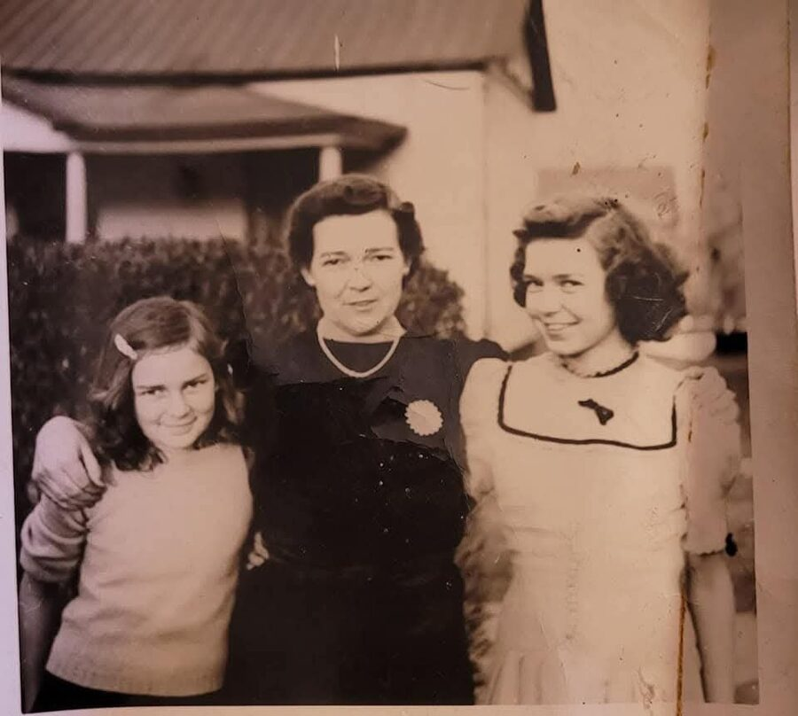
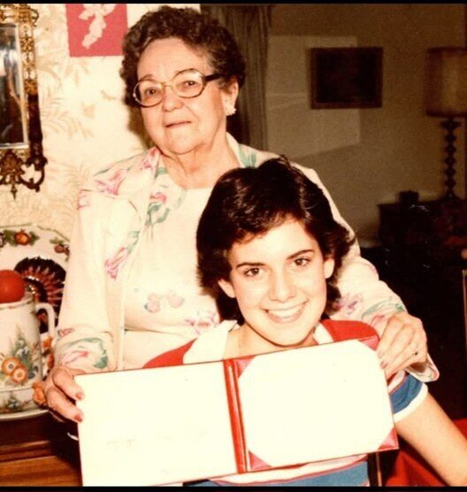
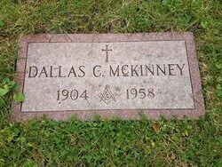

Laverne Hurt
17 October 1906 – 3 October 1986
Quick Facts
Immediate Family
Parents
James Emmette Hurt (1879–1955) DOCUMENTEDEdna Bailey (1880–1926) DOCUMENTED
Children
Jackson Ahmeek "Jack" McKinney (1924–2014) SUPPORTEDEdgar Alba "Ed" McKinney (1928–2018) SUPPORTED
Edna Ellen McKinney Graff (1931–2002) SUPPORTED
Ruth Laverne McKinney (1932–2018), married Lawrence Richard Shamblen, later Tom McGregor FAMILY ACCOUNT
Siblings
- Waldo Emmett Hurt (1902–1904), died in infancy UNPROVED
- Melba Hurt (1909–1992), schoolteacher SUPPORTED
- James Roland Hurt (1910–1980), married Ruby Jane Kessinger SUPPORTED
- Annadine "Deany" Hurt Duncan (1913–1975), married Harry Andrew Duncan Jr. SUPPORTED
- A brother, b. 1914, known only from a birth-register entry DOCUMENTED
- Emmett Jay Hurt (1923–1991) SUPPORTED
Laverne was the second of James and Edna's children. Waldo is carried on family accounts; his death entry names a father "F. E. Hurt" and is not yet placed. After their mother died in 1926, Melba raised the baby, Emmett.
On Family Tree Sites
Couple Folder
Life Timeline
1906 · age 0
Born (17 Oct), daughter of James Emmette Hurt and Edna Bailey, Beckley, Raleigh Co., WV DOCUMENTED
1910 · age 3
In her parents' household; father a railroad brakeman, Skelton, Raleigh Co., WV DOCUMENTED
1920 · age 13
With her parents' family, Sprague, Raleigh Co., WV DOCUMENTED
1923 · age 16
Married Dallas Cecil McKinney (10 Apr), Ironton, Lawrence Co., Ohio FAMILY ACCOUNT
1924 · age 17
Son Jackson Ahmeek "Jack" born (21 Jan), Beckley, WV SUPPORTED
1926 · age 20
Mother Edna Bailey Hurt died (19 Oct), Beckley, WV SUPPORTED
1928 · age 22
Son Edgar born (16 Oct), Beckley, WV SUPPORTED
1930 · age 23
Family of four in the census, Town district, Raleigh Co., WV DOCUMENTED
1931 · age 24
Daughter Edna Ellen born (12 Jan), West Virginia SUPPORTED
1932 · age 25
Daughter Ruth Laverne born (10 Jul), Beckley, WV FAMILY ACCOUNT
1940 · age 33
Census: family of six; named as Dallas's contact on his draft card, Town district and R-1 Beckley, Raleigh Co., WV DOCUMENTED
after 1945 · age late 30s
Moved north with the family, Cincinnati, Ohio FAMILY ACCOUNT
1955 · age 49
Father James Emmette Hurt died (24 Nov), Beckley, WV DOCUMENTED
1958 · age 52
Widowed (Dallas died 1 Dec), Cincinnati, Ohio DOCUMENTED
1986 · age 79
Died (3 Oct); buried beside Dallas at Spring Grove, Cincinnati, Ohio SUPPORTED
Life Story
Laverne Hurt was born on 17 October 1906 in Beckley, Raleigh County, West Virginia, the daughter of James Emmette Hurt and Edna Bailey. Her father worked with his hands all his life in Beckley: a railroad brakeman in 1910, later a carpenter and a hardware and furniture man. Her mother's people, the Baileys, had been in Raleigh County since before the county was formed. The 1910 census finds the family at Skelton, and the 1920 census at Sprague, both in Raleigh County.
On 10 April 1923, by the family record, Laverne married Dallas Cecil McKinney in Ironton, Ohio, across the river. She was sixteen and he was eighteen. Three years later, on 19 October 1926, her mother died at home in Beckley at forty-six, when Laverne was twenty.
Laverne and Dallas raised four children in the coal country around Beckley: Jack, Edgar, Edna Ellen and Ruth Laverne. Her faith was something she did with her hands. She cooked at the Kanawha Valley Baptist Association camp on Tyler Mountain, where her daughter Ruth met her future husband, and, by her great-granddaughter's account, she helped build a church in Beckley.
After the war the family moved north to Cincinnati. Dallas died there in 1958, and Laverne lived on as a widow for twenty-eight years. The family called her "Nana" and remembers her as loving to the whole family. She once assured a young in-law that she could get him a job at Procter & Gamble. It didn't work out, but the family remembers the offer. And when her future son-in-law Richard got cold feet and backed out of the wedding the first time, it was Nana who forgave him.
In her last years Nana lived in a nursing home in Cincinnati, where her daughter Ruth and the great-grandchildren came to see her. She died in Cincinnati on 3 October 1986, at seventy-nine, and was laid beside Dallas at Spring Grove Cemetery. For years afterward the family went there together to put flowers on her grave.
More of Laverne's story will be added as family members share their memories.
Photo Gallery





Sources and Evidence
- West Virginia Births, 1853–1921: Laverne Hurt, b. 17 Oct 1906, Beckley, Raleigh County; parents James Emmette Hurt and Edna Bailey (seen as a record match on Geni) DOCUMENTED
- 1910 and 1920 U.S. censuses, Raleigh County, WV (Skelton; Sprague), in her parents' household (images in the couple's Documents folder) DOCUMENTED
- 1930 U.S. census, Town district, Raleigh County, WV, ED 23, sheet 25-A, line 29: Dallas C. McKinney, 24; wife Lavern, 23; sons Jackson A., 6, and "Edward A.", 1 (image in the couple's Documents folder) DOCUMENTED
- 1940 U.S. census, Town district (Wickham), Raleigh County, WV: Dallas, carpenter, with Laverne and children Jack, Edgar, Edna and Ruth (image in the couple's Documents folder) DOCUMENTED
- Dallas C. McKinney's WWII draft card (16 Oct 1940) names "Mrs Laverne McKinney", wife, R-1, Beckley, as his contact. MyHeritage https://www.myheritage.com/research/record-20912-18728048/dallas-c-mckinney-in-united-states-world-war-ii-draft-registrations DOCUMENTED
- Social Security Death Index: Laverne McKinney, b. 17 Oct 1906, d. Oct 1986, last residence Cincinnati, Ohio 45243 DOCUMENTED
- Find a Grave memorial 78993275, LaVerne Hurt McKinney: b. 17 Oct 1906 Beckley; d. 3 Oct 1986 Cincinnati; buried Spring Grove; married 1923; parents James Emmette and Edna Bailey Hurt https://www.findagrave.com/memorial/78993275 SUPPORTED
- BillionGraves burial index: Laverne McKinney (born Hurt), 1906–1986, Spring Grove Cemetery SUPPORTED
- Parents' couple profile, James Emmette Hurt × Edna Bailey: marriage 14 Jun 1902, Raleigh County; Edna d. 19 Oct 1926, Beckley; James d. 24 Nov 1955, Beckley; children's list SUPPORTED
- Cliff Shamblen's autobiography: camp cook at Tyler Mountain; the Procter & Gamble offer; "loving to the whole family"; forgave Richard FAMILY ACCOUNT
- Memories of her great-granddaughter (2026): the church in Beckley, nursing-home visits, cemetery visits FAMILY ACCOUNT
- Couple profile, Dallas Cecil McKinney × Laverne Hurt, and the couple story "Nana" (family accounts and research notes) FAMILY ACCOUNT
Grades: DOCUMENTED an original record says it · SUPPORTED several records point to it · FAMILY ACCOUNT the family's own telling · UNPROVED a lead, not proved.
Research Notes and Open Questions
- Death date: 3 Oct 1986 rests on Find a Grave and the family record; the Social Security index gives only October 1986. One Ancestry tree entry gives 18 Feb 1906 – 19 Apr 1986, which disagrees with her birth record. Her Ohio death certificate would settle it.
- The 1923 Ironton marriage record has not been found (Lawrence County, Ohio, April 1923).
- No obituary has been found. The Cincinnati Enquirer for early October 1986 is the place to look.
- Which church in Beckley she helped build is not yet named; family photos of it may exist.
- Her Beckley house was later torn down; its address is not in the notes.
- When she and Dallas moved to Cincinnati is not pinned down (between 1940 and 1958). An undated residence at Oak Hill, WV, appears in one family tree.
- Her name is spelled Laverne, LaVerne, Lavern (1930 census) and Luverne (some trees): all the same woman.
- The three-women photo is not captioned. Who the two girls are (possibly her daughters Edna and Ruth) needs a family answer.
DNA
No DNA matches linked yet.